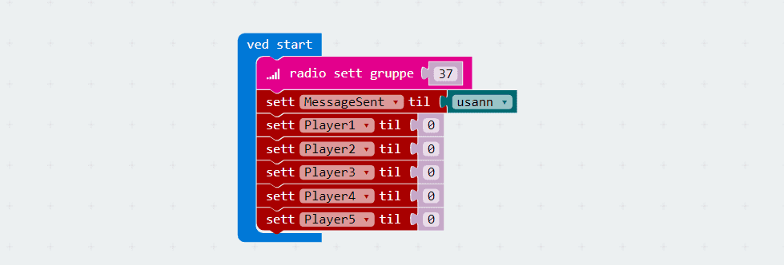
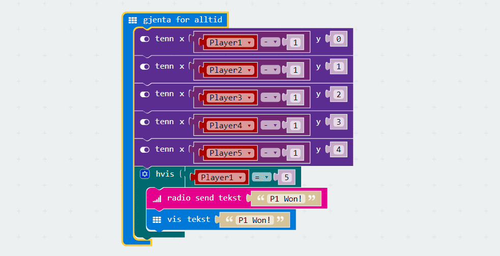
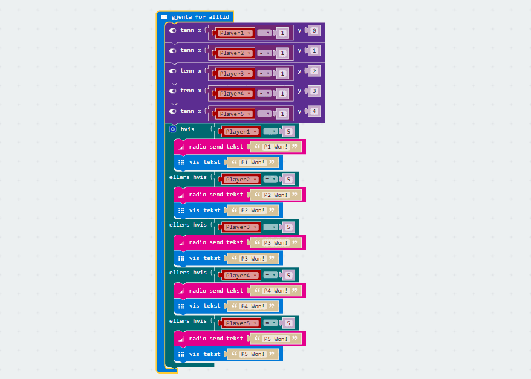
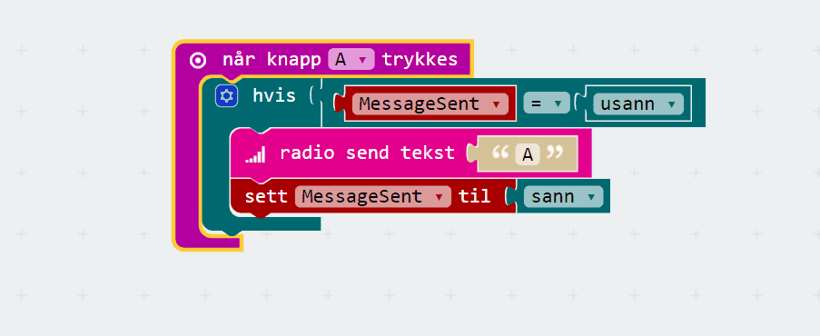
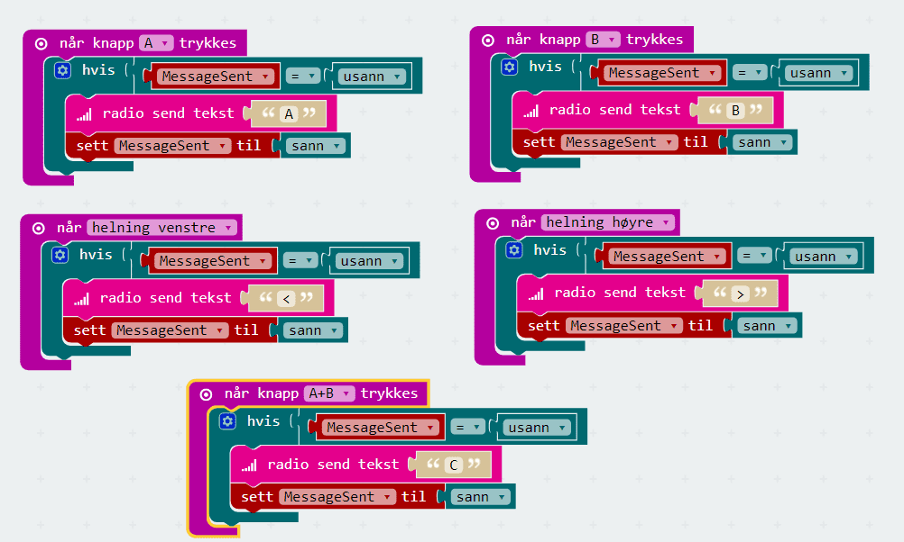
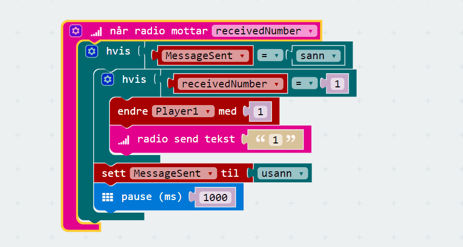
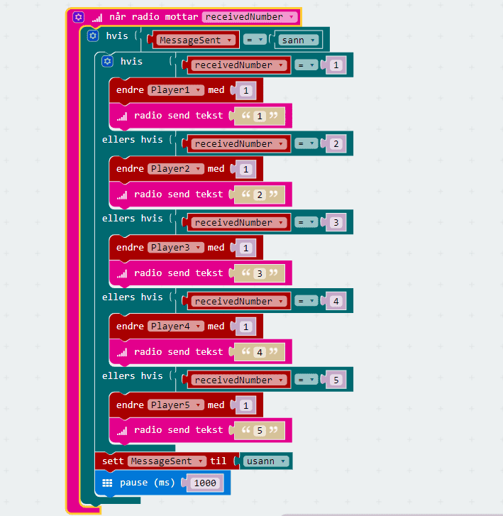
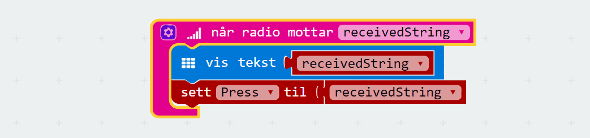
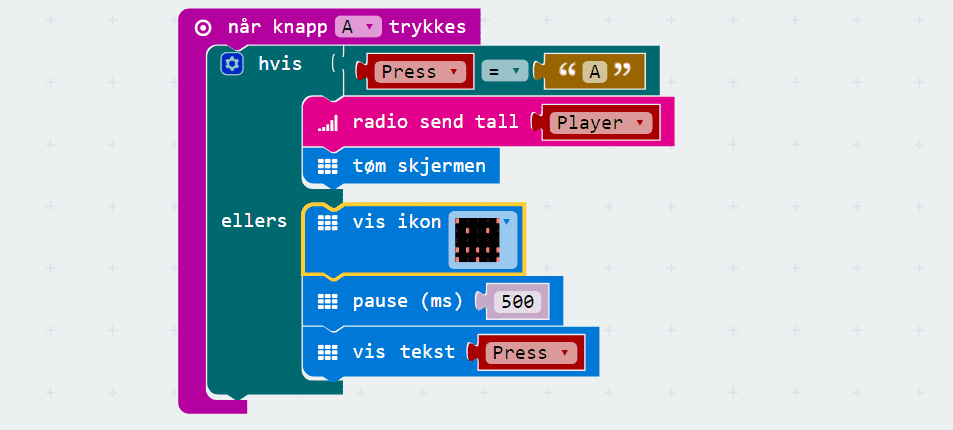
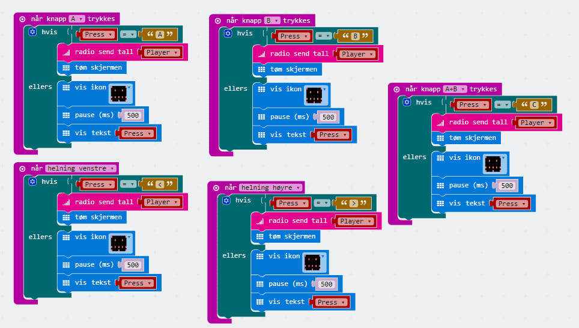

Hermegåsa er et spill der en person er spilleder, og går ut på at han utfører
instruksjoner på micro:biten sin som de andre spillerene skal gjenta, altså
herme etter, på sin micro:bit. Dette er et multiplayer-spill, og det er om å
gjøre å være den raskeste spilleren til å herme etter spillederen. Spillederen
har oversikt på skjermen sin over poengene til de ulike spillerene, og spillet
avsluttes når en spiller har vunnet 5 ganger.
På bildet ser du at spillederen er i midten og har poengsummen til spiller 1 og
spiller 2 på skjermen sin. På sidene har spillerne fått beskjed om hva de skal
gjøre, i form av en pil på skjermen. Førstemann som vipper micro:biten sin
sammen vei som pilen vinner.
Steg 1: Sjekk at du har riktig utstyr
Det er viktig at du har alt utstyr og tilbehør for å kunne gjøre denne
oppgaven.
Sjekkliste
Spillregler
Her er en oversikt over reglene i spillet:
Skjerm viser
Spiller utfører
A
Trykk på A
B
Trykk på B
C
Trykk på A + B
<
Vipp til venstre
>
Vipp til høyre
Steg 2: Programmere spillederen
Når spillet skal starte så må vi sørge for at alle micro:bitene kan
kommunisere med hverandre, og da må vi bestemme et gruppe-nummer som alle
deltagere bruker når man sender informasjon over Bluetooth. I tillegg må vi
lagre at vi har sendt ut en melding til deltagere, slik at vi ikke sender ut
flere meldinger før vi har fått svar på den forrige.
Sjekkliste

OBS!
Husk at gruppenummeret du har valgt må brukes alle steder i spillet hvor du
skal bestemme gruppenummer. I denne oppgaven har vi valgt tallet 37.
I oppgaven antar vi at vi har fem spillere. Dersom dere er færre spillere enn
det så trenger du ikke legge til så mange spillere.
Steg 2: Vise poeng på skjermen
For å holde oversikt over hvor mange poeng de forskjellige spillerne har så
viser vi dette på skjermen til spillederen. Dersom noen av de får 5 poeng så
gir vi beskjed om at den spilleren vant.
Sjekkliste


Steg 3: Sende ut meldinger til deltagerne
Så må vi sende ut meldinger til deltagere om hva de skal herme etter. Vi lager
en blokk for hver av de forskjellige meldingene, ut ifra reglene beskrevet
over.
Sjekkliste


Steg 4: Sjekke svaret til deltagerne
Etter hver runde må spillederen sjekke hvem av deltagerne som var raskest til
å herme.
Sjekkliste


Steg 5: Overføre programmet til spillederen
Steg 6: Programmere spillerne
Først må vi sørge for at spillerene kobler seg til spillederen og gir de et
spillernummer, slik at vi kan sjekke hvem som vinner.
Sjekkliste
Steg 7: Når spiller mottar melding
Neste steg er å motta meldingen om hva vi skal herme etter, og lagre den. Da
kan vi senere sjekke om vi har gjort rett.
Sjekkliste

Steg 8: Når spiller mottar melding
Siste steg er å herme etter spilleder og sende beskjed i retur.
Sjekkliste


Steg 9: Overføre programmet til spillerne
Overfør programmet til hver av spillerne sine micro:biter. Husk å endre
programmet med spillernummer mellom hver gang og last ned på nytt.
Sjekkliste
OBS!
Husk å endre hvilket nummer hver spiller er mellom hver nye microbit du kobler
til og laster ned programmet til. Du må laste ned programmet på nytt for hver
av spillerne med de endringene du har gjort.
Utfordringer
Sikkerhet med server og klient
Vi har nå laget en applikasjon med server (spilllederen) og klienter
(spillerene). Spillerne kommuniserer gjennom hver sin klient, men koordinerer
(teller hvem som vinner) på en server.
Sikkerhet i spillet vårt
Hver klient kan i prinsippet bestemme hvilken kode som skal kjøre på sin egen
enhet. Dette gjør det mulig å jukse! For å unngå at det er mulig å jukse må vi
tenke oss om for hvordan vi koder serveren vår og hvordan vi koder klienten vår.
Å la klienten sende tilbake "jeg hadde rett" er ikke sikkert. Da kan jeg
lage min egen klient som alltid gir meg alle poengene, uansett om jeg har svart
rett eller galt.
Å la klienten sende tilbake "jeg svarte B" er bedre. Da må jeg faktisk vite
svaret for å kunne få poeng. Hva tror du skjer dersom du gjetter alle svarene
hele tiden? Klarer du tenke på en måte å unngå at dette er mulig?
Sikkerhet på Facebook
Facebook er en annen applikasjon som er delt inn i klient og server.
Klienten viser bildene dine og vennene dine. Du ser klienten når du går til
facebook.com i en nettleser. Når du bruker Facebook-appen på en mobiltelefon,
bruker du en annen klient.
Serveren holder styr på all informasjonen. Serveren kan si om du prøver å
logge inn med rett brukernavn og passord. Serveren vet hvem som er vennene
dine, og den vet hvem som kan administrere hvilke sider og grupper.
Hva hadde skjedd dersom gruppeadministrasjon ble håndtert i klienten? Hvordan
kunne du da laget din egen klient? Hva kunne du gjort med denne?
Forbedre denne siden
Funnet en feil? Kunne noe vært bedre? Hvis ja, vennligst gi oss tilbakemelding ved å lage en sak på Github eller fiks feilen selv om du kan. Vi er takknemlige for enhver tilbakemelding!